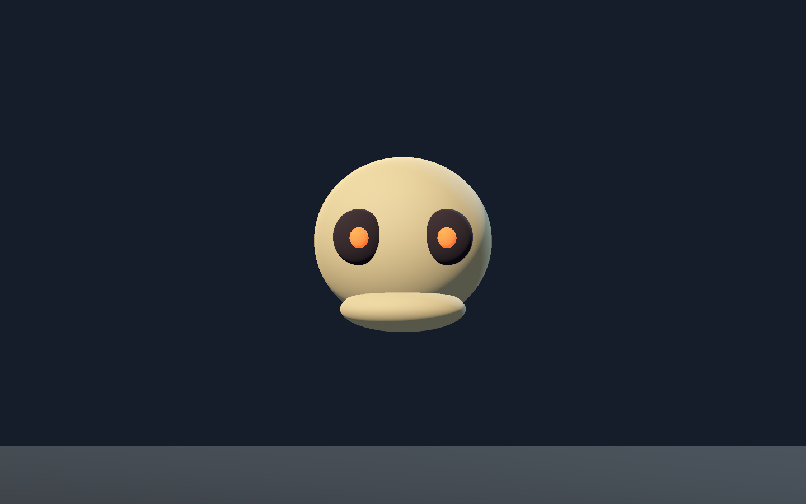
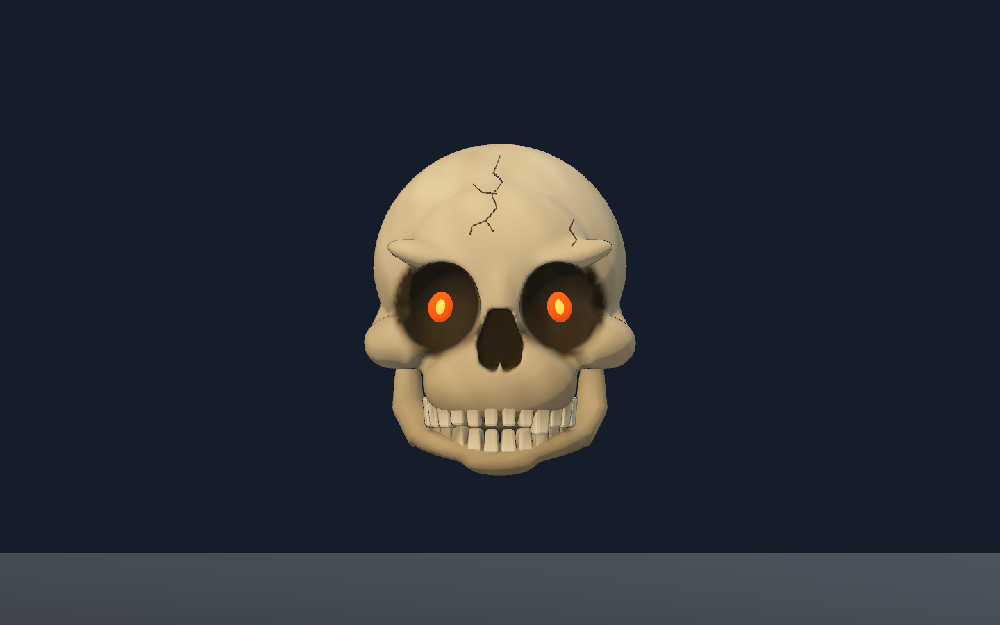
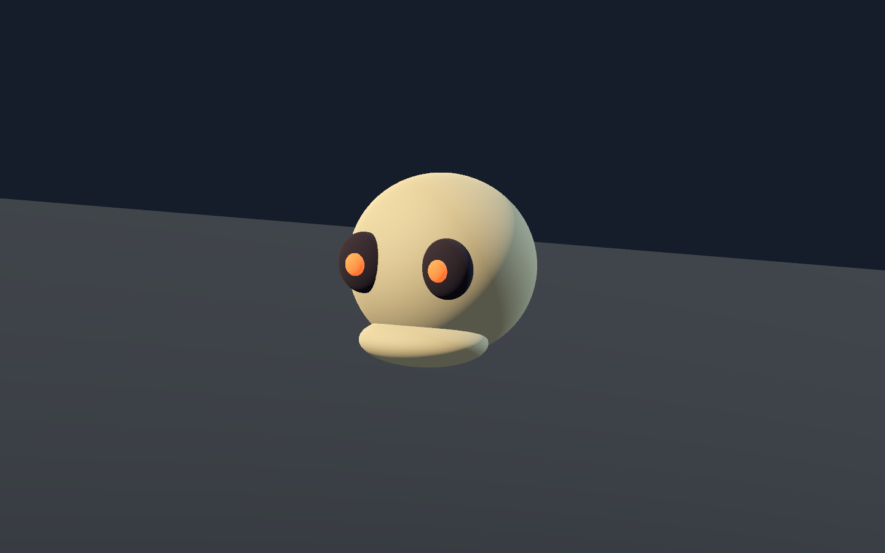
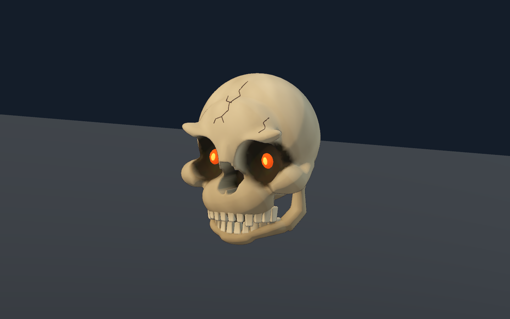
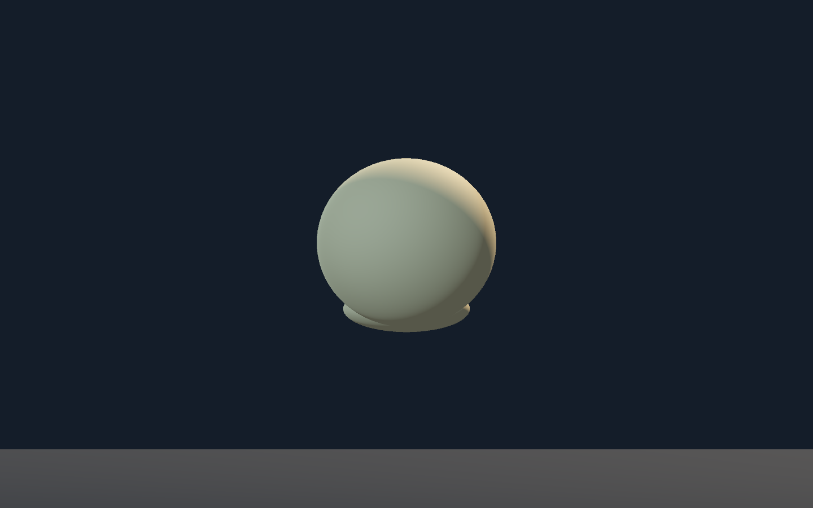
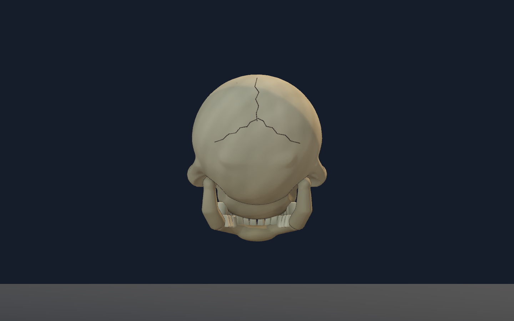
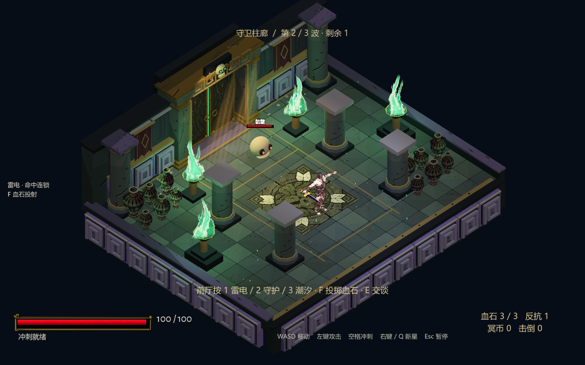
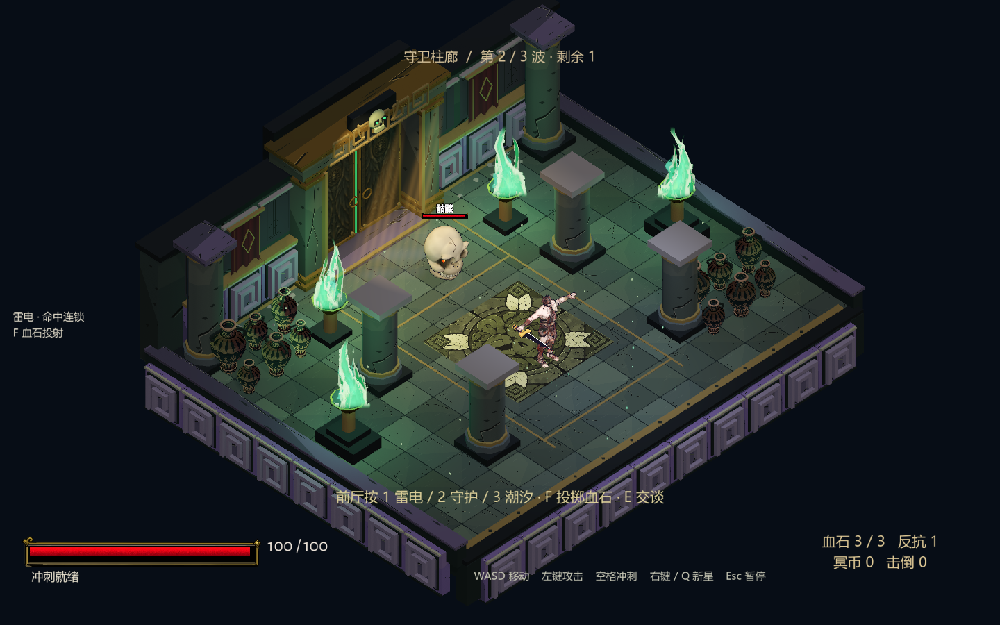
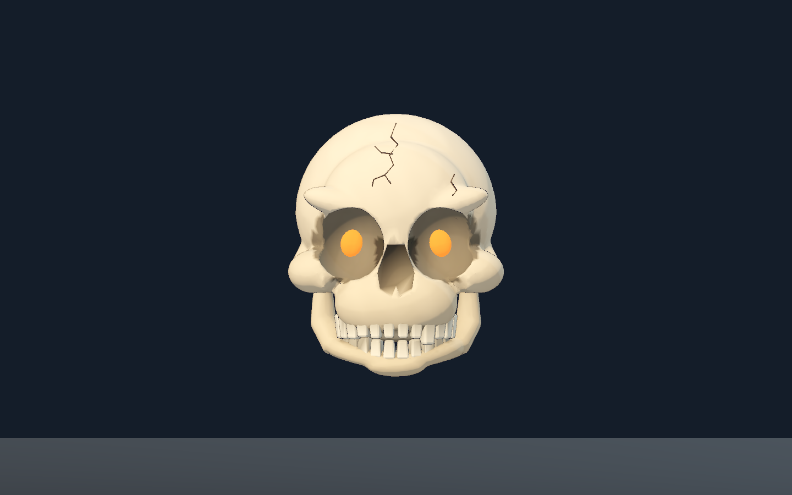
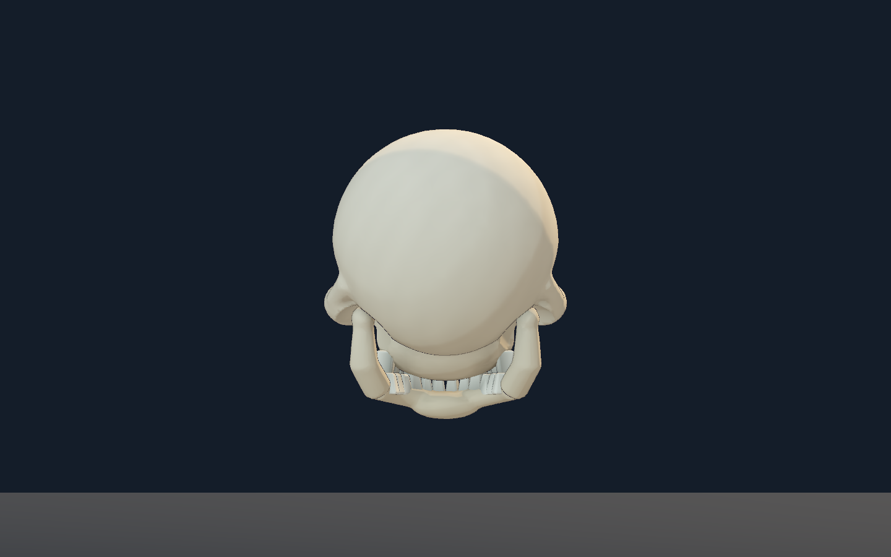

真实腔体 / Carved cavities
眼眶与鼻腔从颅骨中挖出深度，颧弓连接面部轮廓；不是贴在球面上的黑色眼片。
Orbital and nasal recesses have geometric depth, with cheek arches shaping the face instead of dark patches placed on a sphere.
只调整会冲撞的骷髅敌人。下列四组均为同镜头、同光照的 Godot 原生画面，原始草模保留供直接比较。
Only the charging skull enemy is revised. All four pairs are native Godot images with matched cameras and lighting; the original placeholder remains visible for comparison.
This revision has been visually inspected; the limitations below remain.
版本 / Revision: Skull R01 v2 · 原作级还原度仍未验收 / Original-game fidelity remains unaccepted.
眼眶、鼻腔、齿列与下颚比例
Orbits, nasal cavity, teeth and jaw proportions


面部腔体深度、颧弓与铰接结构
Cavity depth, cheek arches and jaw articulation


后颅轮廓、骨面分区与缝合线
Cranial silhouette, bone planes and sutures


守卫柱廊中的轮廓和远景可读性
Silhouette and readability in the colonnade


眼眶与鼻腔从颅骨中挖出深度，颧弓连接面部轮廓；不是贴在球面上的黑色眼片。
Orbital and nasal recesses have geometric depth, with cheek arches shaping the face instead of dark patches placed on a sphere.
24 颗牙分别塑形，运行时合并成上、下齿组。下颚围绕真实 JawPivot 铰点开合。
Twenty-four teeth are individually shaped and joined into upper/lower runtime groups. The mandible rotates around its authored hinge.
顶点骨色承载骨面、烟灰和接触暗部，专用着色器接收房间局部灯光，控制眼部余烬与细描边。
Vertex colors carry bone planes, soot and contact tones. A dedicated shader receives local room lights with restrained ember emission and outlines.
独立漂浮时钟、蓄势、冲撞前倾、受击反冲和翻落通过模型与下颚变换表达；不冒充新骨骼动画。
Hover, windup, rush lean, recoil and a falling pose use model/jaw transforms. These are presentation poses, not newly authored skeletal animation clips.
单独打开视频 / Open video · 1.83s · 30 fps · 无音轨 / No audio track
受控单骷髅测试：使用实际游戏房间、正常敌人 AI 与明确起点；测试辅助器将敌人生命设为 500。冲撞实际命中后，主角生命 100 → 88。没有直接调用伤害或冲撞特效，这不是自然整局通关。
Controlled single-skull fixture in the production room, with normal enemy AI and explicit starting positions. The test helper sets enemy HP to 500. Actual charge contact changes player HP from 100 to 88. Damage and charge effects are not directly injected; this is not a natural full-game run.
26 项结果包含 4 项实战断言与 22 项源文件一致性检查；另有 3 个骷髅文件哈希核对，不计入该总数。短片只覆盖一次命中冲撞，其余边界由下方专项测试摘要分别记录。
The 26 reported checks comprise 4 gameplay assertions and 22 source-integrity checks. Three additional skull-file hash checks are excluded from that total. This clip covers one successful contact rush; other boundaries belong to the separate focused suite below.
原生 Godot Forward+ 渲染。近景使用固定检查灯光，游戏镜头使用实际房间光照；前后对应组的相机、灯光、角色锚点和朝向一致。为检查造型冻结了 AI 与物理，并显式放置敌人。本页没有将受控摆位截图称为自然通关录像，也没有对图像做重绘或透视对齐。
Native Godot Forward+ rendering. Studio pairs use fixed inspection lights; the production camera uses real room lighting. Each pair matches camera, lights, actor anchor and facing. AI/physics were frozen and the enemy was placed explicitly. These are controlled geometry inspections, not natural-playthrough evidence; no image repainting or perspective warping was used.
以下是早期候选，供回看骨色、暗腔边界和后颅骨面调整；它不是上方当前模型。
Earlier candidate retained to inspect the bone color, cavity boundaries and rear planes. It is not the current model shown above.


MODEL SHA-256
33a7ee47381a89e469f25b6c3a69a1a7de19179a824ccd27d1ab30bcbcf0beb4